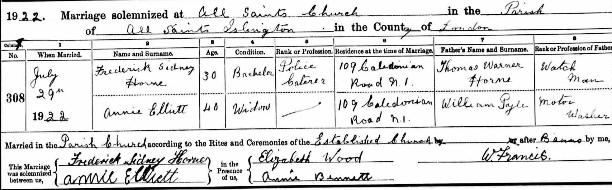

Annie Horne (née Elliett) 1885 - c1951
[ Home ] | [ Calendar ] | [ Surnames Index ] | [ Errors ] | [ Family History ]Annie Elliett, the wife of Frederick Sidney Horne (the first cousin twice-removed on the father's side of Nigel Horne), was born on 9 Mar 18851. She married Frederick (a police caterer) at All Saints, Islington, London, England on 29 Jul 19223.
During her life, she was living at 109 Caledonian Road in Islington in 1922 and at 75 Bingfield Street in Islington on 29 Sept 19391.
She died c. Feb 1951 in Islington2.
Citations
- 1939 Register - Findmypast (was the wife of the head of the household)
- England & Wales deaths 1837-2007 - Findmypast
- England & Wales Marriages 1837-2005 - Findmypast
Media
Frederick Sidney Horne - Annie Elliett Marriage

1939 Register Transcription - TNA-R39-0298-0298C-008-25
England & Wales deaths 1837-2007 - BMD/D/1951/1/AZ/000700/140
England & Wales Marriages 1837-2005 - BMD-M-1922-3-AZ-000383-022
England & Wales marriages 1837-2005 Image - BMD-M-1922-3-AZ-000383
Family Tree

Map
Generated by ged2site. Last updated on Jul 3, 2024
Known Issues
Date of birth is known, but not place
Residence record for 1922 contains no citation
No records of living with anyone